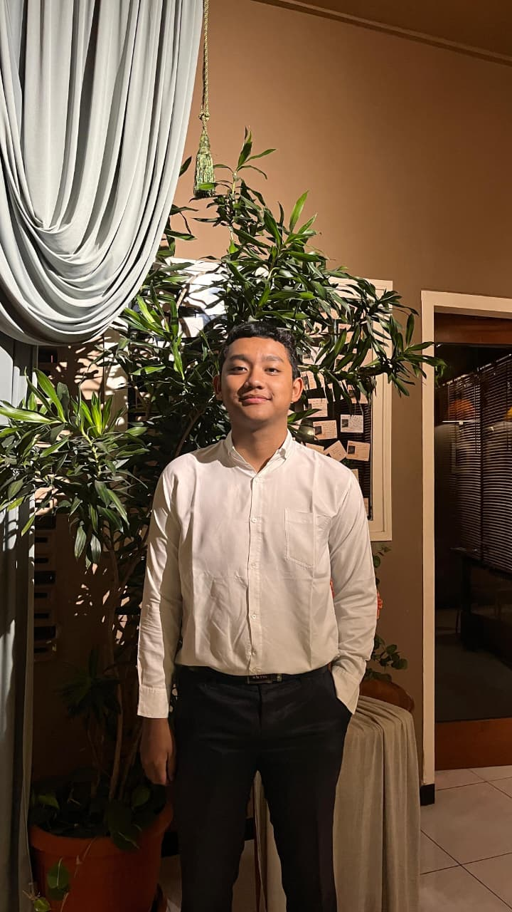

I build mobile apps that solve real problems.
Avis Zola Raditya Kurniawan
Flutter Developer · SMK Telkom Malang
Projects
Certificates
Years Building
class ProblemSolver extends Developer { final String mindset = "Think first, build second."; Solution solve(Problem p) { return Solution( research: true, iteration: 3, impact: "real", ); } }
Think First,
Build Second
Saya percaya software terbaik lahir dari pemahaman masalah yang dalam — bukan dari langsung menulis kode.
Saya mulai coding di SMK Telkom Malang dan langsung jatuh hati pada Flutter. Bagi saya, error bukan kegagalan — error adalah petunjuk untuk menulis kode yang lebih baik.
Saat ini saya fokus menjadi Flutter developer yang tidak hanya bisa membuat UI, tapi juga memahami arsitektur, pengalaman pengguna, dan bagaimana software bekerja di dunia nyata.
Tech Stack
Currently Building
Building
Portfolio v3 — engineering-focused narrative dengan arsitektur modular.
Learning
BLoC state management, GetX, dan clean architecture di Flutter.
Reading
Flutter documentation, Firebase best practices, dan software architecture patterns.
Goal
Magang sebagai Flutter developer di perusahaan teknologi untuk menerapkan dan mengembangkan skill.
EazyChise: Smart Web Platform
Franchise Management Platform for Growing Culinary Businesses
Problem
Banyak pelaku UMKM ingin mengembangkan bisnis melalui sistem franchise, tetapi proses operasional, monitoring cabang, pengelolaan mitra, dan distribusi informasi masih dilakukan secara manual. Hal ini menyebabkan inefisiensi, data terfragmentasi, dan sulit untuk diskalakan.
Solution
EazyChise hadir sebagai platform manajemen franchise terpusat. Aplikasi ini memungkinkan pemilik bisnis mengelola mitra, memantau performa cabang, dan mendistribusikan informasi secara real-time dalam satu sistem yang terintegrasi.
Tech Stack
Architecture
Platform menggunakan arsitektur web client-server. Browser mengirimkan request HTTP ke Firebase untuk autentikasi, penyimpanan data, dan pengelolaan media. Cloud Firestore bertindak sebagai database utama yang menyinkronkan data franchise secara real-time ke seluruh pengguna. Admin Dashboard mengkonsumsi data yang sama untuk monitoring dan pengelolaan sistem.
Challenge
- Mendesain struktur data yang efisien untuk sistem web yang digunakan oleh berbagai jenis pengguna (admin, mitra, cabang).
- Mengelola autentikasi dan role untuk membedakan akses setiap level pengguna.
- Menjaga konsistensi dan keamanan data antar modul yang saling terhubung.
- Merancang antarmuka yang mudah dipahami oleh pemilik bisnis non-teknis.
- Menyiapkan arsitektur frontend yang modular agar fitur baru dapat ditambahkan tanpa konflik.
Result
- Prototype platform web untuk manajemen franchise berhasil dibangun.
- Seluruh proses bisnis franchise terpusat dalam satu dashboard.
- Struktur modular memungkinkan penambahan fitur tanpa mengganggu komponen yang sudah ada.
- Sistem autentikasi dan role-based access telah terimplementasi.
- Menunjukkan kemampuan end-to-end: analisis kebutuhan, desain UI, frontend, hingga integrasi backend.
Lessons Learned
Pentingnya memahami kebutuhan pengguna bisnis sebelum membangun fitur. Fitur yang tidak sesuai kebutuhan hanya menambah kompleksitas.
Modular architecture mempermudah debugging dan kolaborasi pengembangan. Setiap modul independen dan mudah diuji secara terpisah.
Struktur database yang baik mengurangi kompleksitas sistem secara signifikan — terutama saat sistem sudah memiliki banyak modul yang saling terhubung.
Konsistensi kode dan dokumentasi yang baik mempercepat proses pengembangan dan memudahkan developer lain untuk berkontribusi.
At a Glance
Projects
Repositories
Certificates
Technologies
Years Exp.
Development Workflow
Other Things I've Built
Latest from GitHub
Software Should Be
Reliable
Software harus bisa dipercaya. Tidak crash di saat kritis.
Maintainable
Kode yang bersih dan terstruktur untuk tim masa depan.
Scalable
Tumbuh tanpa menambah kompleksitas secara eksponensial.
Accessible
Untuk semua orang, terlepas dari keterbatasan.
Fast
Kecepatan adalah fitur. Setiap milidetik berarti.
Simple
Kesederhanaan adalah kecanggihan tertinggi.
How I Got Here
Mulai Belajar Coding
Mulai tertarik dengan dunia programming. Belajar dasar Python dan HTML secara otodidak.
SMK Telkom Malang — RPL
Masuk jurusan Rekayasa Perangkat Lunak. Mulai serius belajar Flutter. Bergabung dengan organisasi MPK.
12+ Project & 4+ Sertifikat
Membangun berbagai aplikasi mobile dengan Flutter. Mendapat sertifikasi AI Engineering, Web Development, dan Front End.
Target: Software Engineering Intern
Magang di perusahaan teknologi. Ingin terus belajar dan berkontribusi pada produk yang berdampak nyata.